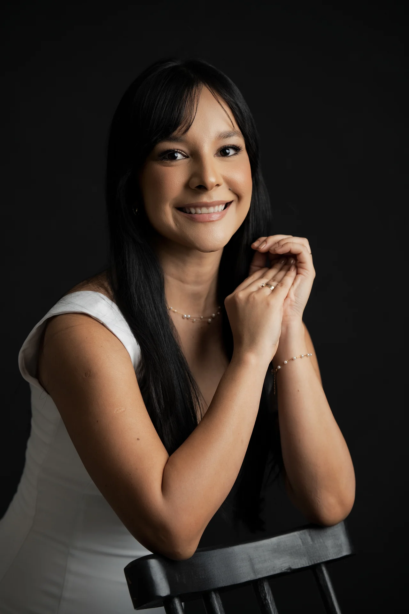
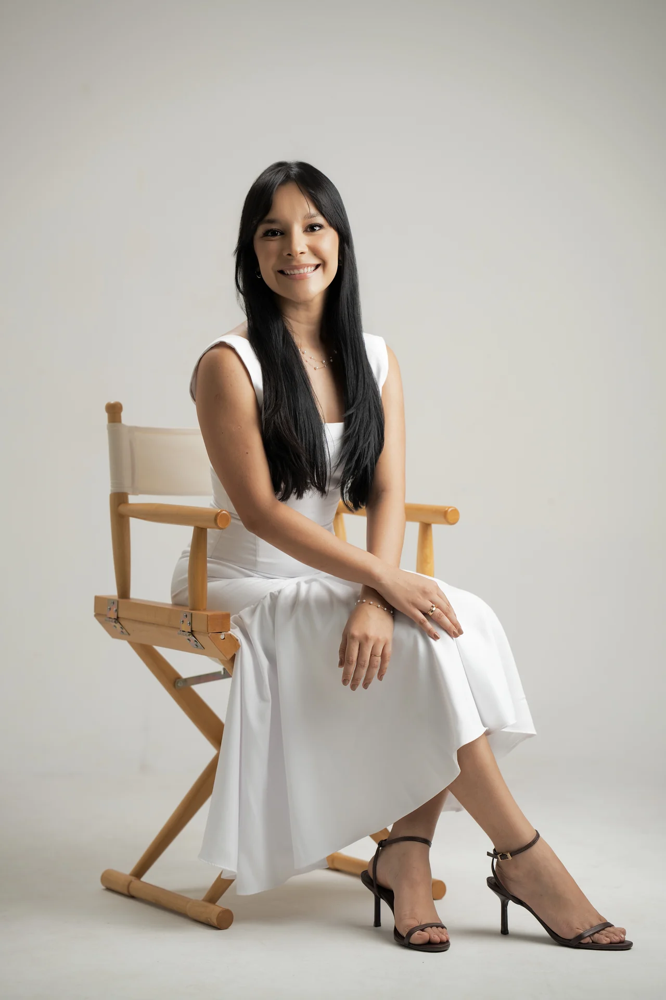

Dra.
geovana paz
Cirurgiã Bucomaxilofacial

Dra. Geovana Paz
Além do sorriso,
existe você.
Áreas de atuação
01Odontologia
02Bucomaxilofacial
03Estética facial

Cuidar de você.
Em cada detalhe.
geovana paz
Cirurgiã Bucomaxilofacial
O próximo passo
Agende sua
avaliação.
@dentista.geovanapaz